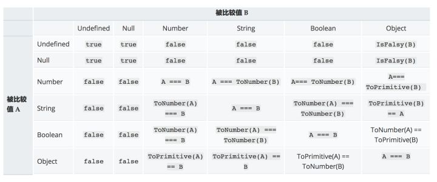

抽象值操作
Tostring
toString() 方法返回一个表示该对象的字符串。
每个对象都有一个toString()方法，当该对象被表示为一个文本值时，或者一个对象以预期的字符串方式引用时自动调用。默认情况下，toString()方法被每个Object对象继承。如果此方法在自定义对象中未被覆盖，toString() 返回 “[object type]”，其中type是对象的类型。
todo
- 从JavaScript1.8.5开始
toString()调用null返回[object Null]，undefined返回[object Undefined] Number对象覆盖了Object对象上的toString方法，不是直接继承的Object.prototype.toString- 转换的基数（2到36），未指定的情况下默认为10，不在范围之内将抛出一个
RangeError - 当要转换的值是负数的时候，结果会保留负号
- 转换的基数（2到36），未指定的情况下默认为10，不在范围之内将抛出一个
- 数组
toString()方法返回表示指定数组及其元素的字符串。toString方法连接数组并返回一个字符串，其中包含用逗号分隔的每个数组元素。
ToNumber
将非数字值转换为数字值
在转换对象时，会先转换为对应的基本类型值，当返回非数字的基本类型值，在进行进一步的转换，转换规则如下
1 | Number('23') //23 |
ToPrimitive
Symbol.toPrimitive 指将被调用的指定函数值的属性转换为相对应的原始值。
Symbol.toPrimitive 属性可以将一个对象转换为原始值。该函数由字符串参数 hint 调用，目的是指定原始值转换结果的首选类型。 hint 参数可以是number，string， 和 default 中的一种。
在没有Symbol.toPrimitive的时候，会首先检查对象是否有valueOf方法，如果存在并且返回值为基本类型则使用此方法，否则继续查看对象是否存在toString方法，如果存在并且返回值为基本类型则使用此方法，否则将抛出TypeError
1 | // MDN的示例 |
toBoolean
将JavaScript值转换为布尔值。
转换规则如下
1 | //以下情况为false |
显式类型转换
显式强制类型转换是通过显而易见的、目的明确的代码将数据进行强制类型转换。
字符串和数字之间是通过String()和Number()来进行呼吸那个转换的
String()按照ToString规则，将值转换为字符串基本类型。
Number()按照ToNumber规则，将值转换为数字基本类型。
+运算符可以显式的将字符串或者日期转换为数字
!!显式的将类型转换为布尔值
隐式类型转换
隐式强制类型转换往往是一些操作的附带产物，如if(){}中会将括号内的部分转换为布尔类型。
参考数学运算符
类型转换规则

数学运算符
对非Number类型进行运算符运算时，会先将非Number类型转换为Number类型
1 | [1, 2] + [3, 4] |
加法运算
- 当一侧为
String类型，被识别为字符串拼接，并会优先将另一侧转换为字符串类型。 - 当一侧为
Number类型，另一侧为原始类型，则将原始类型转换为Number类型。 - 当一侧为
Number类型，另一侧为引用类型，将引用类型和Number类型转换成字符串后拼接。
todo
1 | [] + {} // [object Object] |
[] + {}
左侧转换为""，右侧转换为"[object Object]"
{} + []
涉及JavaScript的语法解析规则。
{}被解析为一个空的代码块
"+[]"被解析为对于空数组的一元操作“+”，也就是将数组强制转换为数字
==
NaN
NaN和其他任何类型比较永远返回false
null/undefined
null == undefined比较结果是true，除此之外，null、undefined和其他任何结果的比较值都为false。
Boolean
Boolean和其他任何类型比较，Boolean首先被转换为Number类型。
string/number
String和Number比较，先将String转换为Number类型。
基本类型/引用类型
当基本类型和引用类型做比较时，对象类型会依照ToPrimitive规则转换为原始类型:
1 | [] == ![] // true |
!的优先级高于==，![]首先会被转换为false，然后false转换成Number类型0，左侧[]转换为0，两侧比较相等。
1 | [null] == false // true |
根据数组的ToPrimitive规则，数组元素为null或undefined时，该元素被当做空字符串处理，所以[null]、[undefined]都会被转换为0。
宽松相等/严格相等
==允许在相等比较中进行强制类型转换，而===不允许。
比较时的转换规则
1 | 比较运算x==y, 其中x和y是值，产生true或者false。这样的比较按如下方式进行： |